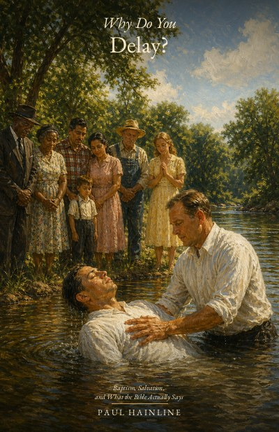
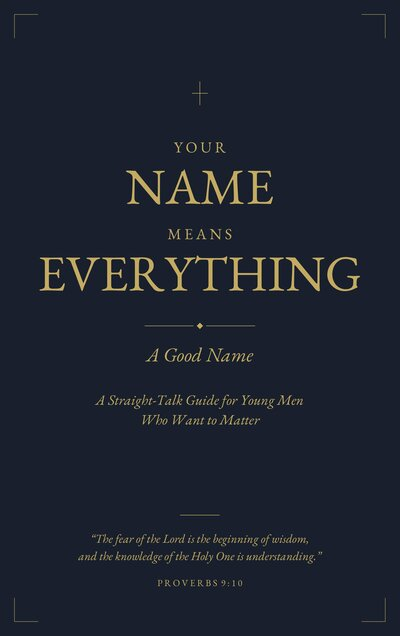
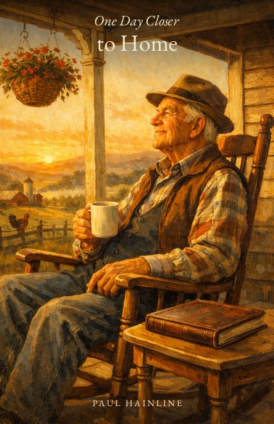
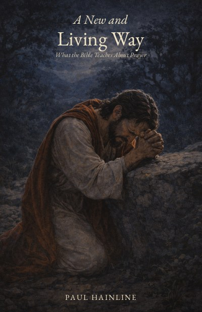
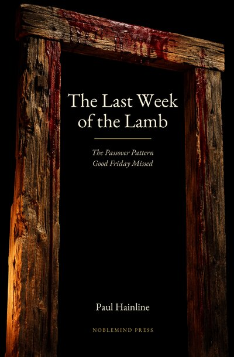

Books
NobleMind Press
Every book here is free to read online. No account, no paywall — just open it and start reading. PDFs and EPUBs are available for most titles if you prefer to read offline.
Not sure where to start? If you’re new to the Bible or exploring faith for the first time, begin with From the Beginning. If you’re a believer looking for deeper study, Can These Bones Live? traces a single pattern through the whole Bible that you may have never seen before.
Starting Point
No background required — start here if the Bible is new to you
From the Beginning
The Gospel from the Ground Up
Starting from zero — no assumptions, no church background required. Ten chapters that walk you from creation through the cross, the empty tomb, and into the life that follows. Written for the seeker, the skeptic, and anyone ready to open the Book for the first time.
Free to download. Printed at cost.

Why Do You Delay?
Baptism, Salvation, and What the Bible Actually Says
Thirteen chapters across three parts: what the Lord and His apostles taught, what the early church did in every conversion in Acts, and honest answers to the common objections raised in our time. Built entirely from the New Testament itself, ending at the question Ananias asked Saul of Tarsus two thousand years ago.
For Young Adults
Scripture-rooted guides for teens and young adults

Your Name Means Everything: A Good Name
A Straight-Talk Guide for Young Men Who Want to Matter
A 13-chapter guide rooted in Scripture for young men stepping into adulthood — covering identity, integrity, purpose, relationships, work, money, and the church. Every chapter built on what God’s Word actually says.
Your Name Means Everything: Strength and Dignity
What the Bible Says to Young Women About Character, Wisdom, and Faith
The companion volume for young women — a 13-chapter guide rooted in Scripture for those stepping into adulthood. From Ruth and Esther to the woman at the well, every chapter shows what it means to build a life of strength, wisdom, and genuine faith.
The Love God Calls Us To
Walking Out 1 Corinthians 13
A walk through 1 Corinthians 13 — the love chapter — taken not as a wedding text but as the apostle Paul’s diagnostic for a fractured first-century church. Fifteen attributes of love, addressed across fourteen chapters, with the Greek named where it helps and the love itself set forth as the eternal nature of God Himself, into which every believer is being called. Written for junior-high and high-school students, useful for adults too.
Free to download.
For Hard Seasons
Written for people walking through real valleys right now
Before I Formed You
What God Says to the Woman Holding This Book
Written for the woman holding it right now — wherever she is, whatever she’s facing. Eight chapters walking through the stories of women in Scripture who faced moments they did not choose: Hagar, Jochebed, Hannah, Ruth, Rahab, Mary, and Esther. Every one of them carried something whose purpose was larger than anything they could see. Everything in these pages comes from Scripture. We didn’t add to it. We just told the stories and let God’s Word speak for itself.
Free to download. Printed at cost.
Change the Mind, Change the Man
Inspired by the teaching of Freddie Anderson
A straightforward examination of what God’s Word says about addiction, recovery, and the turning of the mind — written for the one who is struggling and the family that carries the weight. This is not a clinical guide. It is a careful, honest walk through Scripture by a man who was introduced to drugs at thirteen, arrested at seventeen and sentenced to life in prison, and who has lived every chapter of it. Whether you are the addict, the parent, the spouse, or the friend — this book speaks to all of you at once. Because addiction is a shared story, and the road through it is walked together.
Change the Mind, Change the Man: Study Guide
A Ten-Week Scriptural Study Guide
The companion study guide to Change the Mind, Change the Man. Ten weeks, two tracks — questions for the person in the struggle and questions for the family carrying the weight — with every discussion sent into the open Bible. The book points to where addiction is exposed and answered in Scripture; the guide hands you the text and asks the questions the text itself is asking. Designed for prison ministries, reentry programs, recovery houses, congregational classes, and family devotional time.
Through the Valley
What God Says When the Shadow Is Real
Most books about grief are written for after. But you’re not after. You’re in it right now. Maybe your body is the one that’s failing. Maybe you’re the one sitting beside the bed, watching someone you love move toward the end of their life on this earth. Either way, you know something most people around you don’t fully understand — this valley is real, it is dark, and it doesn’t care about your schedule or your prayers or your plans. This book was written for both of you. To be read together, while you still can.

One Day Closer to Home
A Book of Hope for Those in the Final Chapters
Every day that passes isn’t taking something from you — it’s bringing you one day closer to home. A 13-chapter journey through Scripture for the aging believer, from Simeon’s anticipation and Caleb’s mountain to Paul’s tent, Abraham’s city, and the tears God will one day wipe away.
Bible Studies
Topical studies that follow a single thread through the whole Bible
The God Who Showed Up
What His Names Reveal About Who He Is
God did not reveal all His names at once. He revealed each one at a specific moment — when His people needed to know that particular truth about who He is. From Elohim in Genesis 1 to Immanuel in Matthew 1, this book follows the names of God in the order He revealed them — not as a dictionary, but as a journey. The same journey Israel walked out of Egypt and into the promises of God. The same journey every Christian walks today.

A New and Living Way
What the Bible Teaches About Prayer
A 12-chapter journey through Scripture’s teaching on prayer — from the first cries of Genesis through the torn veil, the Lord’s Prayer, and into the living practice of the early church.
Bridge Moments
Making the Most of Every Opportunity
A 20-chapter study exploring how Jesus and the early church turned everyday encounters into life-changing conversations. Learn to recognize and respond to the bridge moments God places in your path.
Why the Division Among Brethren?
The Underlying Issue Between Institutional and Non-Institutional churches of Christ
A short, patient look at a division more than seventy years old — one most members today have never had explained to them in the other side’s own words. Eleven chapters across four parts state both positions at full strength, walk the relevant Scriptures text by text, and let the text carry the conclusion. Written for the reader who wants to think for himself in front of the open Bible.
Can These Bones Live?
How God Has Always Made Dead Things Live
God showed Ezekiel a valley of dry bones and asked the one question only God can answer: can these live? The answer, then and now, is the same — and it comes by the same means. The word of God gives form. The Spirit of God gives life. Together, and only together, they make dead things stand. Eleven chapters trace that single pattern through the whole Bible, from the dust of Eden to the rushing wind of Pentecost, from the valley of bones to the seven letters Christ dictated to His own church.

The Last Week of the Lamb
The Passover Pattern Good Friday Missed
For seventeen centuries, the church has placed the crucifixion on a Friday — but Friday gives you two nights in the tomb, not three. This book doesn’t start with tradition. It starts with the text. Following the time markers the Gospel writers actually wrote, a different week emerges — a week where the Lamb of God dies on the exact day, at the exact hour, that God commanded the Passover lamb to be killed fifteen centuries earlier. Every conclusion is shown. Every assumption is identified. Every inference is labeled honestly. You will not be asked to take anyone’s word for it. You will be asked to open your Bible.
Apologetics
The case for the Christian faith, made from Scripture and history

The Character No One Could Invent
The Evidence of Jesus’ Deity in the Portrait Itself
A deep look at the character of Jesus Christ as portrayed in the Gospels — examining why the person described in Scripture could not have been fabricated by human imagination. The men who wrote about Jesus misunderstood Him, feared when He was calm, and fled when He stood firm. Yet somehow they produced a portrait no dramatist has ever matched.